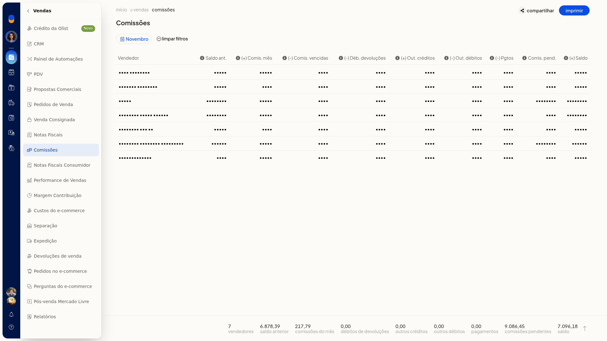

Comissões
Instruções
-
Acesse Vendas > Comissões.

-
Escolha o período no seletor do topo.
-
Clique em limpar filtros para voltar à lista sem o filtro.
-
Confira a tabela pelas colunas Vendedor, Saldo ant., (+) Comis. mês, (-) Comis. vencidas, (-) Déb. devoluções, (+) Out. créditos, (-) Out. débitos, (-) Pgtos, Comis. pend. e (=) Saldo.
-
No rodapé, confira a quantidade de vendedores e os totais das colunas.
-
Clique em Imprimir ou Compartilhar para iniciar a impressão ou o compartilhamento do extrato do período.
Resultado
A lista mostra o período escolhido, as colunas de movimento e o rodapé consolidado.
Informações adicionais
- Saldo ant. indica comissões pendentes do período anterior.
- (+) Comis. mês indica comissões a receber no período atual.